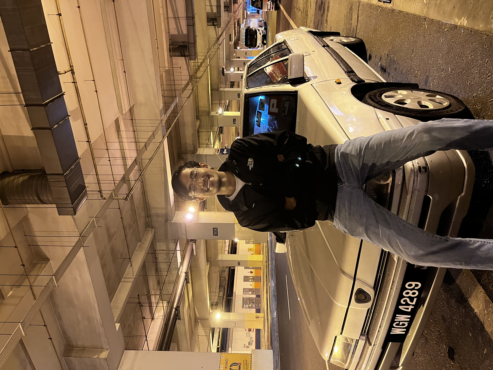

Event Gallery



Passionate about Computer Security, Penetration Testing, Digital Forensics, and the Internet of Things (IoT). Strong foundation in network fundamentals and embedded systems.
Focusing on network analysis, finding vulnerabilities, and understanding digital forensic features.
Extensive experience in hardware troubleshooting, microcontroller programming, and building autonomous sensor-driven systems.
Developing a CNN-based system capable of detecting AI-generated images by analyzing deep forensic features. Focuses on identifying real vs. fake datasets using natural and generative models.
An autonomous, AI-driven recycle bin designed to automatically sort and classify trash based on its material type using visual recognition.
An IoT-based child safety system integrated into infant car seats. Uses TTGO and sensors to detect a baby's presence and automates emergency SMS/voice calls.
An IoT project covering the integration of field sensors with a remote application dashboard (Blynk) to monitor grass height and automate groundskeeping alerts.
Networking / Routing / SEC
Video presentation for the SortBuddy project.
Showcased SafetyInfant and SortBuddy to industry experts.
Performed analysis using Wireshark and Autopsy to find flags.
Innovated and showcased the SortBuddy AI trash classification project.